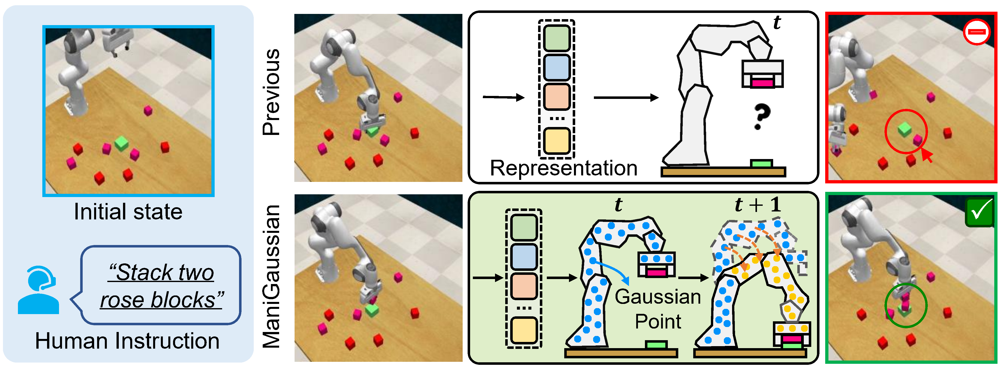
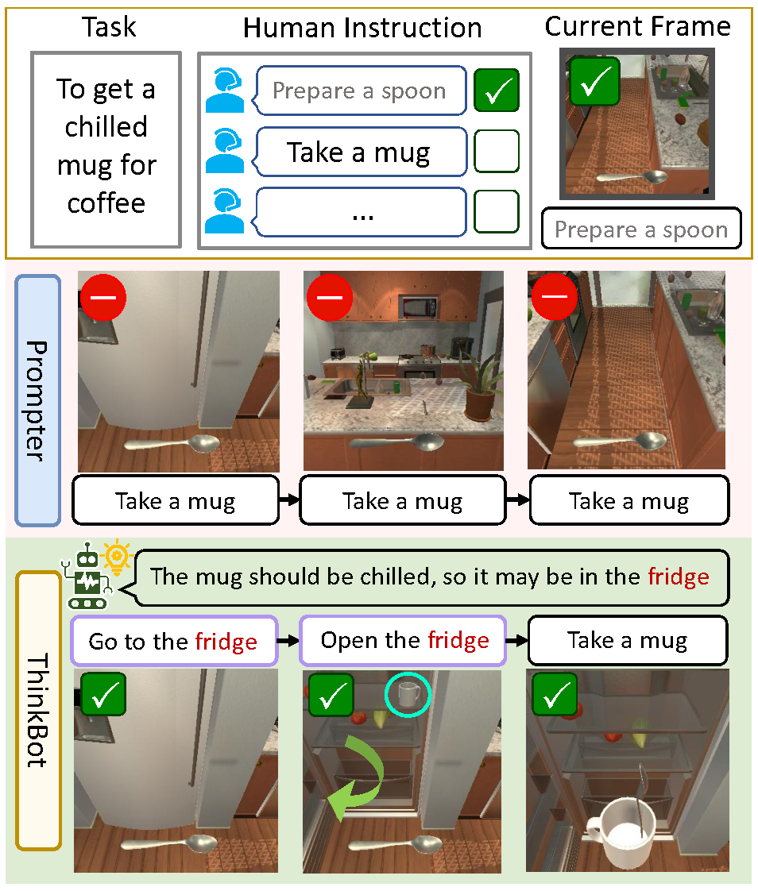
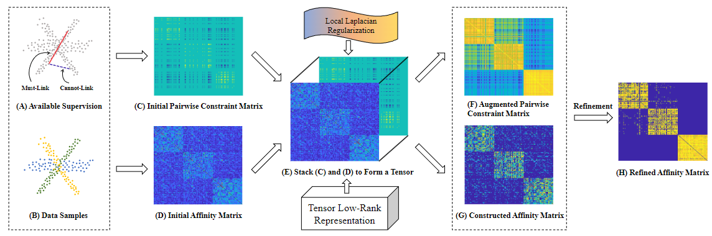
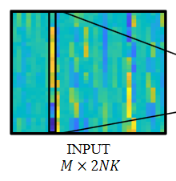

|
Research
My research passion is on "building end-to-end general agent for navigation and manipulation".
Previously, I have some research experiences in computer vision and machine learning. Most of my previous work focuses on how to leverage the proper prior knowledge to boost performance in particular applications.
|
|

|
ManiGaussian: Dynamic Gaussian Splatting for Multi-task Robotic Manipulation
Guanxing Lu, Shiyi Zhang, Ziwei Wang, Changliu Liu, Jiwen Lu and Yansong Tang.
Preprint
[project page] /
[arxiv] /
[code]
We propose a dynamic Gaussian Splatting method named ManiGaussian for multi-task robotic manipulation, which mines scene dynamics via future scene reconstruction.
|
|

|
ThinkBot: Embodied Instruction Following with Thought Chain Reasoning
Guanxing Lu, Ziwei Wang, Changliu Liu, Jiwen Lu and Yansong Tang.
Preprint
[project page] /
[arxiv]
In this paper, we have presented a ThinkBot agent that reasons the thought chain for missing instruction recovery in embodied instruction following (EIF) tasks.
|
|

|
Semi-Supervised Subspace Clustering via Tensor Low-Rank Representation
Yuheng Jia, Guanxing Lu, Hui Liu and Junhui Hou.
IEEE TCSVT 2023
[arxiv] /
[code]
We proposed a novel semi-supervised subspace clustering method, which can simultaneously augment the initial supervisory information and construct a discriminative affinity matrix by leveraging their identical global low-rank
structure.
|
|

|
Learning Low-complexity Robust Transceiver for Massive MIMO Downlink with Enhanced Mobility
Guanxing Lu, Yundi Li, Huapeng Zhou, Yafei Wang and Wenjin Wang.
Proc. IEEE PIMRC 2022
[code]
We derived a quasi-closed-form solution for a multi-user massive MIMO downlink system that BS can only get imperfect CSI, and developed a novel DL-based framework to accelerate the algorithm.
|
Misc
-
Swimming: I am a fan of swimming. I have learned four swimming styles by watching videos.
-
Reading: Recently, I enjoy reading sci-fi novels. I have read more than 580 hours in weread. Looking for book friends!
|
© 2022-2024 Guanxing Lu. Last updated: April. 21, 2024.
斗罢艰险又出发。
|
{kind=link}